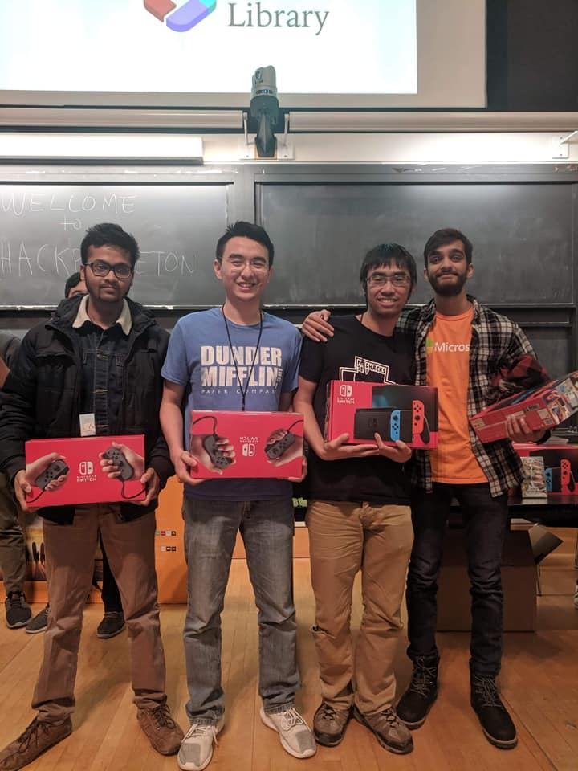

I grew up in Bangladesh, with a knack for reverse-engineering. In 2nd grade, I built an antenna out of scrap wires and intercepted a nearby cable TV signal to watch Swat Kats, since cable wasn't allowed at home.
By high school, that same instinct met a bigger problem. I had dreamed of studying in the U.S. ever since 4th grade, and all I had was $5. One night, I noticed digital items were priced differently across regions. First I flipped them manually through steam; then I used software to trade while I was in class. Over two years, it became Bangladesh's largest eSports marketplace, and that $5 grew into more than $30,000 in profit (600,000% ROI). It was my first real taste of entrepreneurship and my ticket to the U.S. That journey led me to earn bachelor's degrees in Computer Science, Mathematics, and Electrical Engineering. Later, I opted out of Carnegie Mellon University's Computer Science graduate program to build things people want.
I make educational content on programming, AI, startups, and career strategy, reaching 2M+ views, 48K followers on Facebook(Page, Group 1, Group 2) and 10k+ subscribers on YouTube (CSB, Personal).
